การออกแบบวงจรดิจิทัลสำหรับ FPGA เพื่อสร้างสัญญาณรูปไซน์ด้วยวิธี DDS (Direct Digital Synthesis)#
Keywords: Digital Logic Design, VHDL, Intel / Altera FPGA, Quartus Prime, DDS, Signal Generation, R-2R DAC
▷ วงจรดิจิทัลสร้างสัญญาณด้วยเทคนิค Direct Digital Synthesis#
การสร้างสัญญาณเอาต์พุตด้วยวงจรดิจิทัล เช่น สัญญาณที่มีคาบและเป็นรูปคลื่นไซน์ มีวิธีหนึ่งที่สามารถนำมาใช้ได้ เรียกว่า DDS (Direct Digital Synthesis)
องค์ประกอบสำคัญของวงจร DDS ได้แก่
- "วงจรสะสมเฟส" (Phase Accumulator): วงจรส่วนนี้ทำหน้าที่เป็นตัวนับ (Counter) ที่มีค่าเพิ่มขึ้นตามจังหวะของสัญญาณ Clock การเพิ่มเฟสอย่างต่อเนื่องก็เปรียบเสมือนการเพิ่มมุมให้กับฟังก์ชันไซน์ และเมื่อถึงค่าสูงสุด () ก็จะวนกลับมาที่ 0 ใหม่ ดังนั้นอัตราการเพิ่มเฟส จะช้าหรือเร็วก็ส่งผลต่อความถี่ของสัญญาณรูปไซน์ที่ได้
- "ตัวแปลงเฟสเป็นแอมพลิจูด" (Phase-to-Amplitude Converter): วงจรนี้รับค่าจากวงจรบวกสะสมเฟส แล้วแปลงให้เป็นค่าแอมพลิจูด โดยทั่วไปจะใช้วิธีอ่านค่าจากตารางค่าคงที่ เรียกว่า Lookup Table (LUT) ถ้าเป็นรูปคลื่นไซน์ ก็เรียกว่า Sinewave LUT สำหรับข้อมูลที่ได้จากการชักตัวอย่างค่าของฟังก์ชันไซน์สำหรับมุมหรือเฟส
- วงจรแปลงข้อมูลดิจิทัลให้เป็นสัญญาณแอนะล็อก (Digital-to-Analog Converter: DAC)
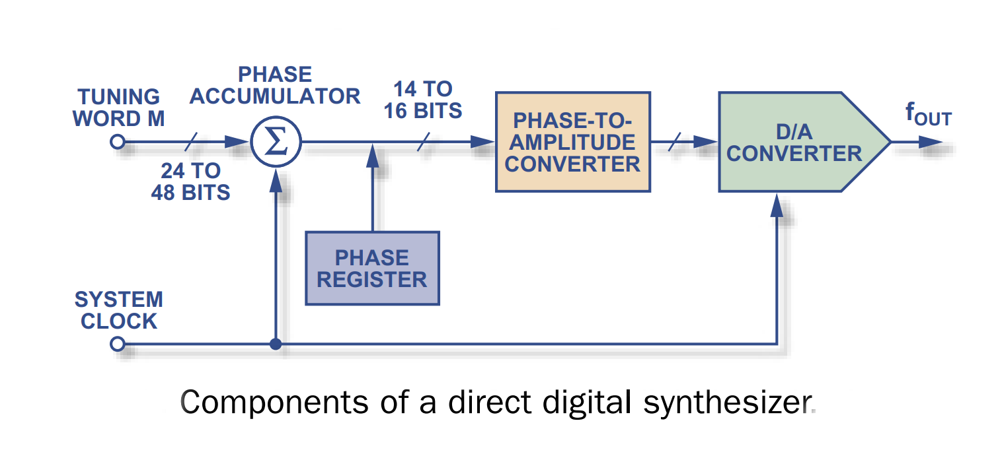
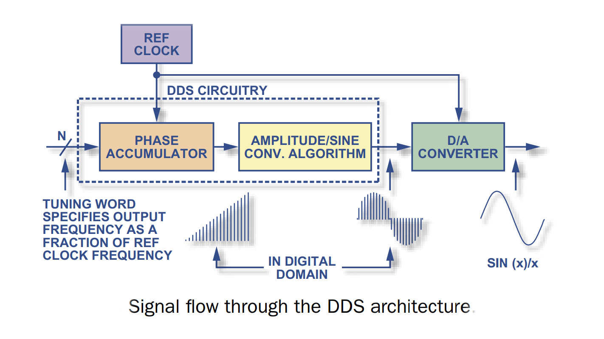
รูป: องค์ประกอบของวงจร DDS (Image Source: Analog Devices)
การเลือกความกว้างบิตของวงจรสะสมเฟส ส่งผลต่อความละเอียดของอัตราการเพิ่มเฟส (ความถี่เชิงมุม) ดังนั้นจึงเป็นตัวกำหนดความละเอียดในการเลือกความถี่ของสัญญาณเอาต์พุต (Frequency Resolution)
ยกตัวอย่างเช่น ถ้าใช้ความถี่ของระบบเท่ากับ MHz วงจรสะสมเฟส มีความละเอียด () เท่ากับ 16 บิต จะได้ความละเอียดของความถี่ ซึ่งได้เท่ากับ Hz แต่ถ้าเป็น 24 บิต จะได้ Hz เป็นต้น
ในขณะที่ความกว้างบิตของค่าตัวเลขใน Lookup Table ส่งผลต่อความละเอียดของแอมพลิจูดที่ได้ และเป็นตัวกำหนดความละเอียดของวงจร DAC ด้วยเช่นกัน
การใช้วงจรสะสมเฟสที่มีความละเอียดสูง ก็อาจทำให้ LUT มีขนาดใหญ่มากเกินไป หนึ่งในวิธีที่นิยมใช้มากที่สุดคือ การตัดบิตที่มีความสำคัญน้อยออกไปจำนวนหนึ่ง ก่อนที่จะนำเอาต์พุตจากวงจรสะสมเฟสไปใช้เป็นอินพุตสำหรับ LUT
▷ การเขียนโค้ด Verilog สำหรับวงจร DDS#
ในการออกแบบวงจรดิจิทัล ได้กำหนดรูปแบบอินเทอร์เฟสของวงจร ดังนี้
CLKเป็นสัญญาณอินพุตสำหรับ Clock ของวงจร (ใช้ความถี่ 50MHz)nRSTเป็นสัญญาณอินพุตสำหรับรีเซตการทำงานของวงจร (Active-Low Asynchronous Global Reset)SEL[3:0]เป็นอินพุตขนาด 4 บิต เพื่อเลือกค่าสำหรับการเพิ่มเฟสให้กับวงจรสะสมเฟสDOUT[BW-1:0]เป็นเอาต์พุตขนาดBW(เช่น 8 บิต) เพื่อนำไปต่อกับวงจร DAC ภายนอก
วงจรนี้มีการกำหนดและใช้งานพารามิเตอร์ ดังนี้
Nเป็นความละเอียดของวงจรสะสมเฟส เช่น เลือกค่าNเท่ากับ 16Mเป็นตัวกำหนดขนาดของ LUT เพื่อเก็บค่าคงที่สำหรับรูปคลื่นไซน์หนึ่งคาบเต็ม เช่น ถ้าให้Mเท่ากับ 8 จะมีจำนวนข้อมูลเก็บไว้ใน LUT เท่ากับ แต่ถ้าMเท่ากับ 10 จะมีขนาดเท่ากับBWเป็นความละเอียดของข้อมูลที่ได้จาก LUT เท่ากับ 8 บิต เพื่อนำไปใช้กับวงจร DAC ขนาด 8 บิต
module dds (
input wire CLK, // 50MHz clock input
input wire nRST, // Asynchronous active-low reset
input wire [3:0] SEL, // Select signal for turning word
output reg unsigned [BW-1:0] DOUT // unsigned output (DDS output)
);
// module parameter
parameter BW = 8;
// local parameters
localparam N = 16; // Phase accumulator bits (16-bit)
localparam M = 8; // Sine table resolution (2^M samples)
localparam TABLE_SIZE = 2**M; // Size of the sine table
// Registers for the phase accumulator, and tuning words and sample index
reg [N-1:0] phase_acc;
reg [N-1:0] turning_word;
wire [M-1:0] sample_index;
reg [7:0] count; // 8-bit counter registers
reg ce;
// Sine table or LUT (unsigned 8-bit values, pre-calculated)
reg unsigned [BW-1:0] sine_table [TABLE_SIZE-1:0];
localparam MAX_VALUE = (2**(BW-1)) - 1;
// Initialize sine table using a generate loop
integer i = 0;
//initial begin
// for (i = 0; i < TABLE_SIZE; i = i + 1) begin
// sine_table[i] = $floor(MAX_VALUE * (1+$sin(2*3.14159*i/TABLE_SIZE))/2);
// end
//end
// Initialize the sine table with precomputed values
initial begin
$readmemh("sine_table.txt", sine_table, 0, 2**M-1); // Load from hex file
end
// Counter logic
always @(posedge CLK or negedge nRST) begin
if (!nRST) begin
count <= 8'b0; // Reset the counter to 0
ce <= 1'b0; // Reset CE (count enable) to 0
end
else begin
if (count == 8'd4) begin // Clock divider /5
count <= 8'b0; // Reset the counter to 0 after it reaches 4.
ce <= 1'b1; // Set CE high for one cycle
end
else begin
count <= count + 1'b1; // Increment the counter
ce <= 1'b0; // Keep CE low
end
end
end
// DDS operation (on each clock cycle)
always @(posedge CLK or negedge nRST) begin
if (!nRST) begin
// Reset phase accumulator and output
phase_acc <= 0;
turning_word <= 0;
end else begin
turning_word[3:0] <= SEL;
if (ce) begin
// Update phase accumulator based on selected tuning word
phase_acc <= phase_acc + turning_word;
// Output corresponding sine value from the lookup table
end
end
end
// Output the sine table value (registered)
always @(posedge CLK) begin
DOUT <= sine_table[sample_index];
end
// Use some bits of the phase accumulator output as LUT input
assign sample_index = phase_acc[N-1 : N-M];
endmodule
ในวงจรนี้มีการลดความถี่ของตัวนับ จาก 50 MHz ด้วยตัวหาร /5 ดังนั้นวงจรสะสมเฟสขนาด 16 บิต จะนับด้วยความถี่ 10 MHz หรือมีความละเอียดในเชิงความถี่
ค่าคงที่ของ LUT สำหรับฟังก์ชันไซน์หนึ่งคาบ จะได้จากข้อมูลที่ถูกเก็บไว้ในไฟล์ sine_table.txt
และมีหนึ่งค่าตัวเลข (ฐานสิบหก) ต่อหนึ่งบรรทัด และโค้ด Python ต่อไปนี้
ใช้สำหรับการคำนวณค่าตัวเลขตามลำดับ เพื่อนำไปใส่ลงในไฟล์ sine_table.txt
import math
M = 8
BW = 8 # Bitwidth for sample values
SAMPLES = 2**M # Number of samples
MAX_VALUE = (2**BW - 1) # Maximum value (unsigned integer)
output = []
for i in range(2**M):
# Calculate a sine value
sine_value = (1 + math.sin(2 * math.pi * i / SAMPLES))/2
# Scale sine value to the desired range
value = int(MAX_VALUE * sine_value)
# Append the value (a hex string)
output.append(f"{hex(value)[2:].zfill(2)}")
print( "\n".join(output) ) # show output
▷ การจำลองการทำงานของโค้ด Verilog#
เมื่อได้เขียนโค้ดสำหรับวงจรดิจิทัล DDS แล้ว ถ้ดไปเป็นตัวอย่างการเขียนโค้ด Verilog Testbench เพื่อใช้ในการทดสอบและจำลองการทำงานของวงจรดิจิทัล โดยมีตัวอย่างดังนี้
`timescale 1ns/1ps
module tb_dds;
// Testbench signals
reg t_CLK;
reg t_nRST;
reg [3:0] t_SEL;
wire unsigned [7:0] t_DOUT;
// Instantiate the DDS module
dds uut (
.CLK(t_CLK), .nRST(t_nRST), .SEL(t_SEL), .DOUT(t_DOUT)
);
// Clock generation (50MHz)
always begin
#10 t_CLK = ~t_CLK; // Toggle clock every 10ns -> 50MHz
end
integer i;
initial begin
t_CLK = 0;
t_nRST = 0;
t_SEL = 0;
#100 t_nRST = 1; // De-assert reset
#1000;
@(posedge t_CLK); // Wait for the next rising edge of the clock
t_SEL <= 4'd1;
i = 0;
while (i < 10) begin
#500000;
while (t_DOUT != 0) begin
@(posedge t_CLK); // Wait for the next rising edge of the clock
end
t_SEL <= t_SEL + 4'd1;
i = i + 1;
end
// End simulation
$finish;
end
// Monitor the signals
initial begin
$dumpfile("output.vcd"); // Specify the name of the VCD file
$dumpvars(0, tb_dds);
end
endmodule
ถัดไปเป็นการสาธิตการใช้ซอฟต์แวร์ Open Source สำหรับ Ubuntu ได้แก่ Icarus Verilog Simulator และ GTKWave และคำสั่งการติดตั้งและใช้งานสำหรับ Ubuntu 22.4 LTS มีดังนี้
# Install iverilog and gtkwave for Ubuntu
$ sudo apt install iverilog gtkwave
# Check the version of Icarus Verilog simulator
$ iverilog -V | grep Icarus | head -n 1
Icarus Verilog version 12.0 (stable)
# Compile the Verilog (Std.2005) source files
$ iverilog -g2005 -o dds_sim dds.v dds_tb.v
# Run the testbench simulation
$ vvp dds_sim
# Open the waveform file (.vcd) with GTKWave
$ gtkwave output.vcd
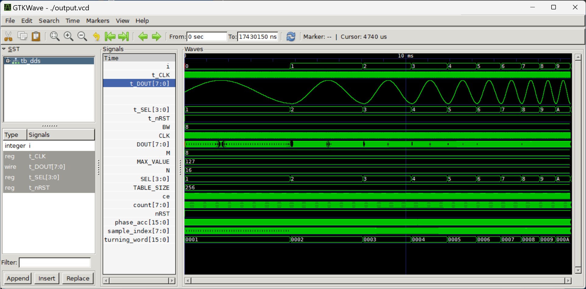
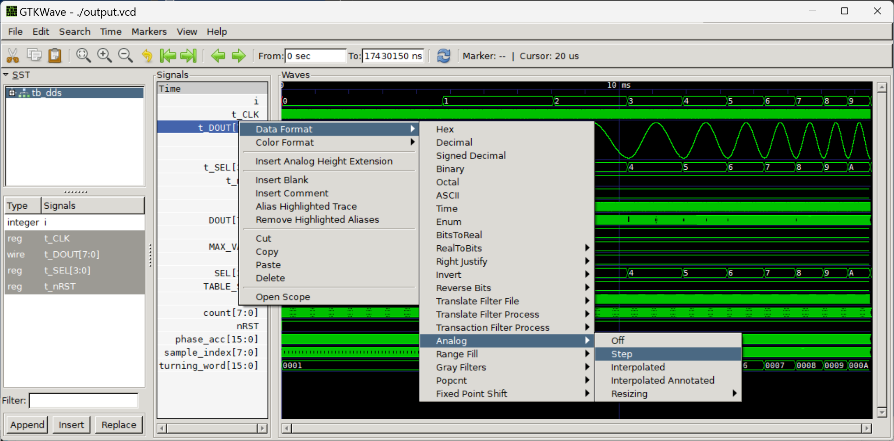
รูป: ตัวอย่างรูปคลื่นสัญญาณที่ได้จากการจำลองการทำงานของวงจร DDS และแสดงผลด้วยโปรแกรม GTKWave
▷ วงจร R-2R DAC#
เอาต์พุตจากวงจร DDS เป็นข้อมูลขนาด 8 บิต (Unsigned) ถ้าจะแปลงให้เป็นสัญญาณแอนะล็อก ก็สามารถเลือกใช้วงจร DAC ประเภทที่เรียกว่า R-2R โดยใช้เพียงตัวต้านทานนำมาต่อกันบนเบรดบอร์ด และมีไอซีออปแอมป์ (OpAmp) ทำหน้าที่เป็นวงจร Voltage Buffer (Voltage Follower) แนะนำให้ศึกษาหลักการทำงานของวงจร R-2R DAC จากบทความ "การฝึกต่อวงจรบนเบรดบอร์ด: วงจร R-2R"
ค่าตัวต้านทานที่เลือกใช้คือ R=10k และ 2R=20k โอห์ม (แนะนำให้เลือกใช้ตัวต้านทานที่มีความคลาดเคลื่อน +/-1%) และไอซีออปแอมป์ที่ใช้เป็นเบอร์ LM358N ใช้ไฟเลี้ยง VCC=5V และ GND=0V
เอาต์พุต DOUT[7:0] เมื่อมีลอจิกเป็น HIGH จะมีแรงดันไฟฟ้าประมาณ 3.3V
ดังนั้นเมื่อแปลงข้อมูล 8 บิต ให้เป็นสัญญาณแอนะล็อก จะได้แรงดันอยู่ในช่วง 0V ~ 3.3V
ถ้าต้องการจะได้แรงดันไฟฟ้าสำหรับสัญญาณเอาต์พุตรูปไซน์ที่มีทั้งบวกและลบ
ก็จะต้องมีการต่อวงจรเพิ่ม เพื่อปรับค่า Voltage Offset
สำหรับสัญญาณเอาต์พุต หรือนำไปต่ออนุกรมกับตัวเก็บประจุไฟฟ้าเพื่อตัดค่า DC Offset ออกไป
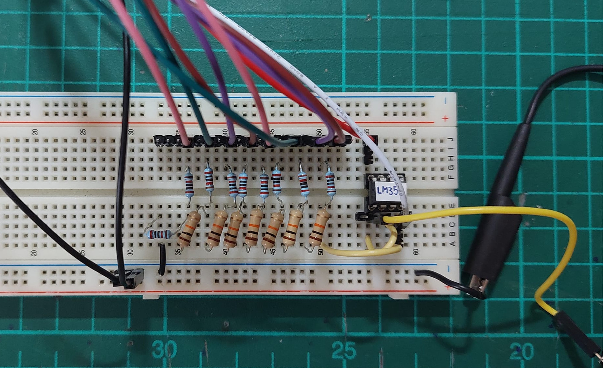
รูป: ตัวอย่างการต่อวงจร R-2R DAC (8-bit) บนเบรดบอร์ด
▷ การแปลงโค้ด Verilog เพื่อนำไปใช้กับบอร์ด FPGA#
บอร์ด FPGA ที่ได้เลือกมาใช้ในการทดลองคือ บอร์ด Terasic DE10-Lite Development Kit ซึ่งมีชิป Intel MAX 10 FPGA (10M50DAF484C7G) และซอฟต์แวร์ที่ใช้คือ Intel Quartus Prime Lite Edition v22.1 (ทดลองใช้งานกับระบบ Linux Ubuntu)
การเลือกขาสัญญาณต่าง ๆ สำหรับวงจร DDS เป็นไปตามคำสั่งของไฟล์ Tcl Script ดังนี้
- สัญญาณ
CLKได้จากสัญญาณ CLK 50MHz จากวงจรบนบอร์ด FPGA - สัญญาณ
nRSTได้จากวงจรปุ่มกดKEY[0]ที่มีอยู่บนบอร์ด FPGA - สัญญาณอินพุต
SEL[3:0]ได้จากวงจรสวิตช์เลื่อน (Slide Switches) ที่มีอยู่แล้วบนบอร์ด FPGA - สัญญาณเอาต์พุต
DOUT[7:0]ใช้ขา GPIO Pin Headers จำนวน 8 ขา บนบอร์ด FPGA
# Pin & Location Assignments
# ==========================
# MAX10_CLK1_50
set_location_assignment PIN_P11 -to CLK
set_instance_assignment -name IO_STANDARD "3.3-V LVTTL" -to CLK
# KEY[0]
set_location_assignment PIN_B8 -to nRST
set_instance_assignment -name IO_STANDARD "3.3-V LVTTL" -to nRST
# SW[0]
set_location_assignment PIN_C10 -to SEL[0]
set_instance_assignment -name IO_STANDARD "3.3-V LVTTL" -to SEL[0]
# SW[1]
set_location_assignment PIN_C11 -to SEL[1]
set_instance_assignment -name IO_STANDARD "3.3-V LVTTL" -to SEL[1]
# SW[2]
set_location_assignment PIN_D12 -to SEL[2]
set_instance_assignment -name IO_STANDARD "3.3-V LVTTL" -to SEL[2]
# SW[3]
set_location_assignment PIN_C12 -to SEL[3]
set_instance_assignment -name IO_STANDARD "3.3-V LVTTL" -to SEL[3]
# GPIO10
set_location_assignment PIN_W5 -to DOUT[0]
set_instance_assignment -name IO_STANDARD "3.3-V LVTTL" -to DOUT[0]
# GPIO12
set_location_assignment PIN_AA14 -to DOUT[1]
set_instance_assignment -name IO_STANDARD "3.3-V LVTTL" -to DOUT[1]
# GPIO14
set_location_assignment PIN_W12 -to DOUT[2]
set_instance_assignment -name IO_STANDARD "3.3-V LVTTL" -to DOUT[2]
# GPIO16
set_location_assignment PIN_AB12 -to DOUT[3]
set_instance_assignment -name IO_STANDARD "3.3-V LVTTL" -to DOUT[3]
# GPIO18
set_location_assignment PIN_AB11 -to DOUT[4]
set_instance_assignment -name IO_STANDARD "3.3-V LVTTL" -to DOUT[4]
# GPIO20
set_location_assignment PIN_AB10 -to DOUT[5]
set_instance_assignment -name IO_STANDARD "3.3-V LVTTL" -to DOUT[5]
# GPIO22
set_location_assignment PIN_AA9 -to DOUT[6]
set_instance_assignment -name IO_STANDARD "3.3-V LVTTL" -to DOUT[6]
# GPIO24
set_location_assignment PIN_AA8 -to DOUT[7]
set_instance_assignment -name IO_STANDARD "3.3-V LVTTL" -to DOUT[7]
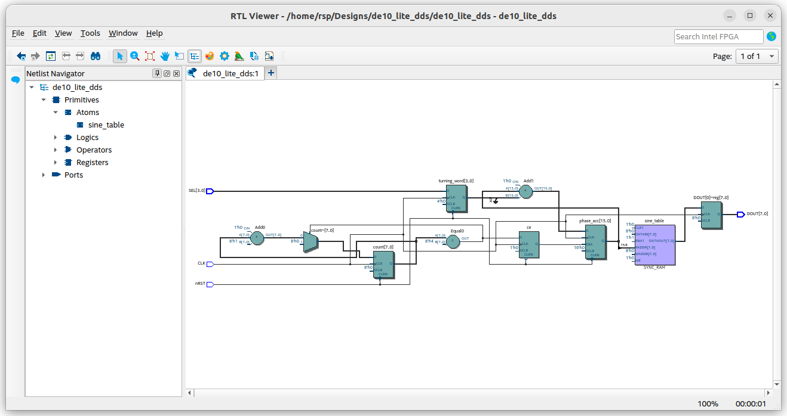
รูป: การสังเคราะห์วงจรลอจิกและตัวอย่างแผนผังวงจรที่ได้ (RTL View)
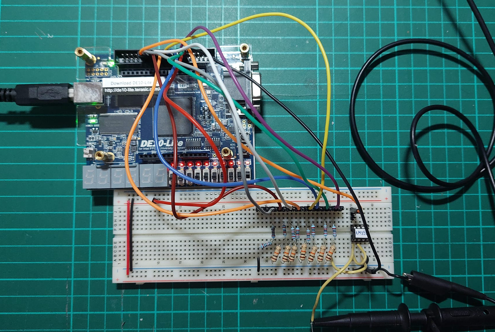
รูป: การต่อวงจร R-2R DAC บนเบรดบอร์ด เพื่อนำไปใช้กับบอร์ด FPGA
▷ การวัดสัญญาณเอาต์พุตด้วย Oscilloscope#
เมื่ออัปโหลดไฟล์ Bitstream ไปยังบอร์ด FPGA ได้แล้ว ขั้นตอนถัดไปคือ การวัดสัญญาณเอาต์พุตที่ได้จาก วงจร R-2R DAC ทดลองเปลี่ยนตำแแหน่งของ Slide Switch 4 ตัว และสังเกตความถี่และรูปคลื่นสัญญาณเอาต์พุตที่ได้
รูป: การวัดสัญญาณเอาต์พุตจากวงจร R-2R DAC ด้วยออสซิลโลสโคป
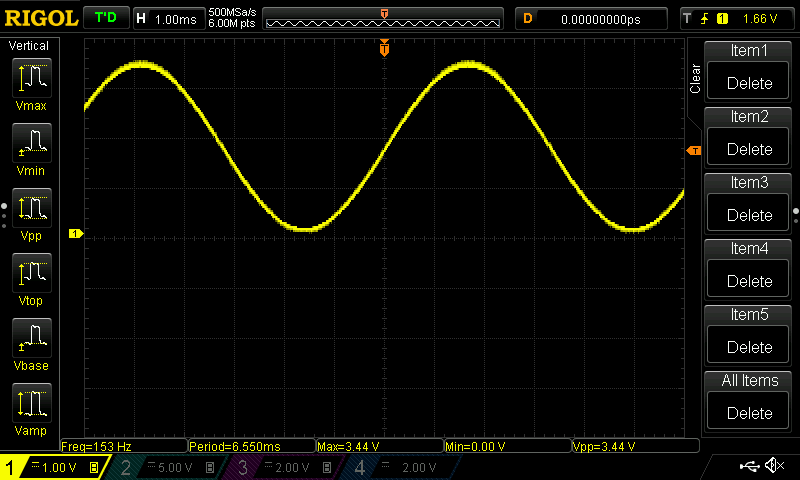
รูป: ตัวอย่างสัญญาณเอาต์พุต เมื่อตั้งค่าสวิตช์เลื่อนเป็น SEL[3:0]="0001" (วัดความถี่ไปประมาณ 153 Hz)
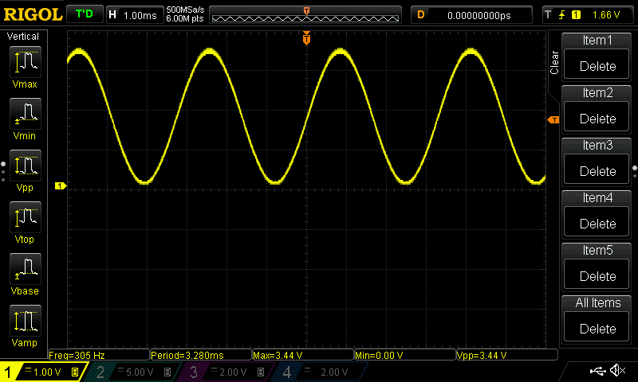
รูป: เมื่อตั้งค่าสวิตช์เลื่อนเป็น SEL[3:0]="0010" (ได้ความถี่เพิ่มเป็น 2 เท่า)
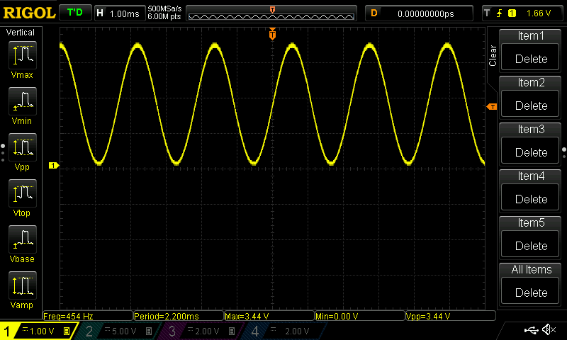
รูป: ตัวอย่างสัญญาณเอาต์พุต เมื่อตั้งค่าสวิตช์เลื่อนเป็น SEL[3:0]="0011"
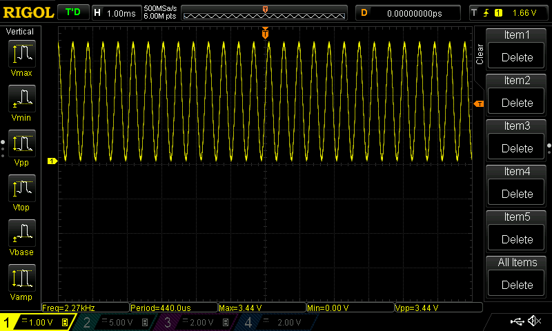
รูป: เมื่อตั้งค่าสวิตช์เลื่อนเป็น SEL[3:0]="1111"
▷ กล่าวสรุป#
บทความนี้ได้นำเสนอตัวอย่างการออกแบบวงจรดิจิทัลเพื่อใช้กับบอร์ด FPGA และใช้วิธี DDS เพื่อใช้ในการสร้างสัญญาณเอาต์พุตรูปคลื่นไซน์ และสามารถปรับเลือกความถี่ได้โดยการเลื่อนตำแหน่งของ Slide Switches และได้สาธิตการใช้งานวงจร R-2R DAC เพื่อแปลงข้อมูลดิจิทัล 8 บิต ให้เป็นสัญญาณแอนะล็อกในช่วง 0V ~ 3.3V
This work is licensed under a Creative Commons Attribution-ShareAlike 4.0 International License.
Created: 2024-10-12 | Last Updated: 2024-10-12